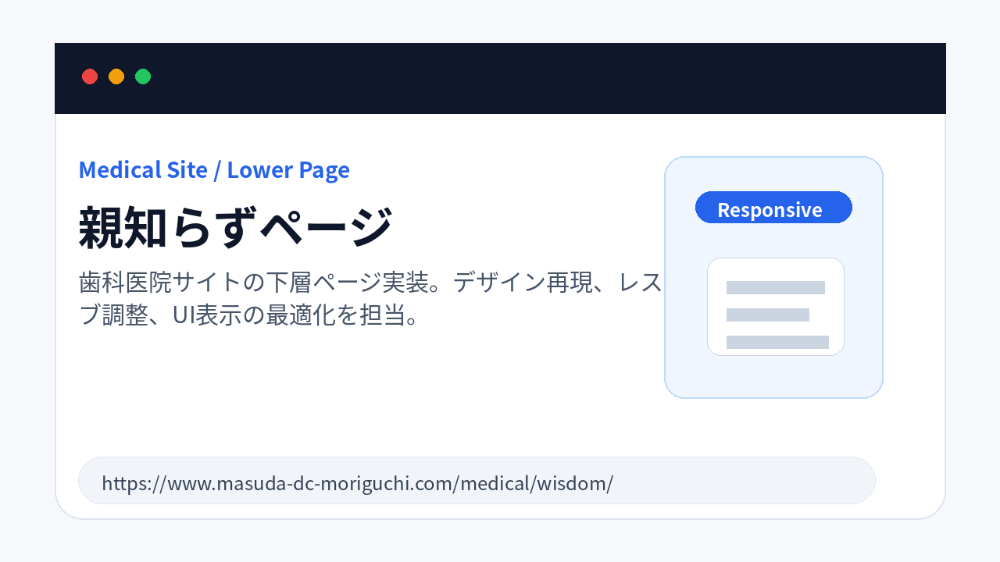
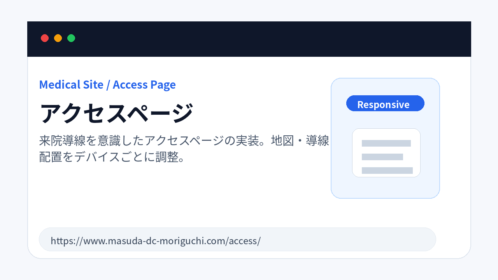
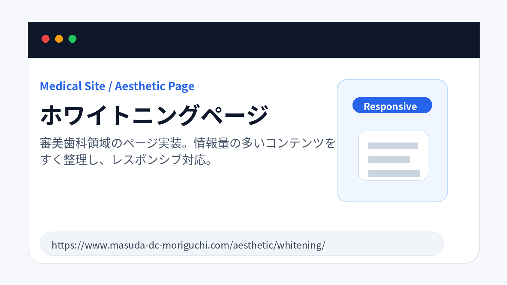
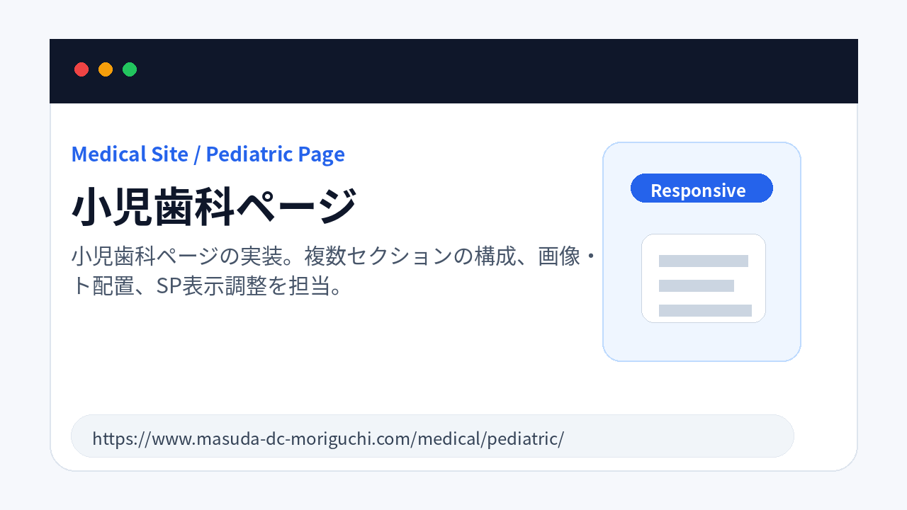

Medical Site / Lower Page
親知らずページ
歯科医院サイトの下層ページ実装。デザイン再現、レスポンシブ調整、UI表示の最適化を担当。
- 担当範囲
- フロントエンド実装 / レスポンシブ対応 / UI調整
Frontend / Web Engineer
HTML / CSS / JavaScript / WordPress を中心に、
レスポンシブ対応・UI調整・保守運用まで対応しています。
ABOUT
2021年よりWeb制作・システム開発領域に携わり、現在は医療機関サイト・企業サイトを中心に、 フロントエンド実装、WordPress運用、UI調整、保守対応を行っています。
Figma等のデザインデータをもとにした高精度なコーディング、PC・タブレット・スマートフォンを考慮した レスポンシブ実装、既存サイトの改修・表示改善を得意としています。
SKILLS
WORKS
公開済みサイトのうち、担当範囲を明確にしたうえで掲載しています。管理画面・内部情報・クライアントソースコードは掲載していません。

Medical Site / Lower Page
歯科医院サイトの下層ページ実装。デザイン再現、レスポンシブ調整、UI表示の最適化を担当。

Medical Site / Access Page
来院導線を意識したアクセスページの実装。地図・導線・画像配置をデバイスごとに調整。

Medical Site / Aesthetic Page
審美歯科領域のページ実装。情報量の多いコンテンツを読みやすく整理し、レスポンシブ対応。

Medical Site / Pediatric Page
小児歯科ページの実装。複数セクションの構成、画像・テキスト配置、SP表示調整を担当。
CAREER
2025.11 - 現在
WordPress / PHP / HTML / CSS を用いた企業サイトのコーディング・改修作業を担当。
2023.11 - 現在
FigmaデザインをもとにしたWebサイト制作、WordPress記事入稿、ローコード開発、Laravel/MySQL開発、PlaywrightとPandasを用いたデータ加工などを担当。
2021.09 - 2025.03
NOREN、イットビルダー、OutSystems、PHP、Laravel、MySQL、Perl等を使用し、既存システム改修・フォームリプレイス・テスト設計・単体テストを担当。
2020.09 - 2021.08
広告運用補佐、SEO効果検証、ブログタイトル立案、PythonによるGoogleアナリティクスデータ自動取得・転記ツール開発を担当。